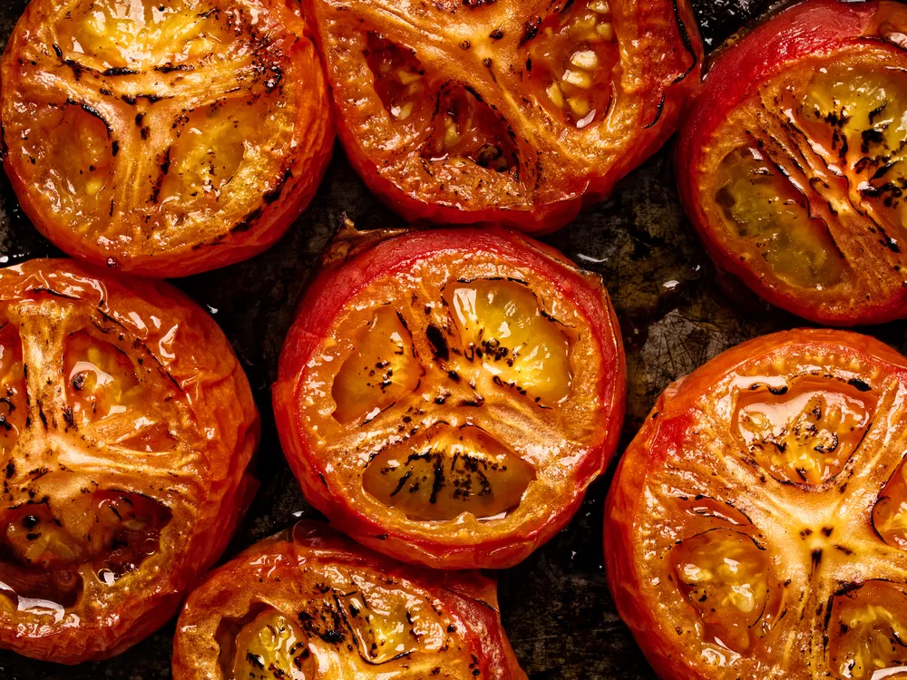

Roasted Tomatoes

Description
Ingredients
- Olive oil for greasing pan plus additional for drizzling (optional)
- 6 large plum tomatoes (1 1/2 lb), halved lengthwise
- 3/4 teaspoon salt
- 1/2 teaspoon black pepper
Steps
- Put oven rack in middle position and preheat oven to 350°F. Oil a shallow baking pan
- Arrange tomatoes, cut sides up, in 1 layer in pan and sprinkle with salt and pepper.
- Roast tomatoes until skins are wrinkled and beginning to brown on bottom, about 1 hour. Transfer to a serving dish and keep warm, covered with tented foil (do not let foil touch tomatoes), until ready to serve. Serve warm or at room temperature.